Quantitative Results
We evaluate the learned tokens from two perspectives. Token consistency measures how stable the tokenization is when the segmentation window is shifted: the agreement accuracy (Acc) between tokens of shifted segmentations and the KL divergence (KLD) between the resulting token distributions, for shift ranges of 0–60 and 0–124 frames. Downstream classification reports macro-F1 and mAP for expert-labeled sigimsae classification on the NIA dataset (all recordings and the vocal-only subset), predicting the category from the assigned token. ED-TCN, a supervised approach, is included as a reference.
Token Consistency
| Method | Acc ↑ | KLD ↓ | ||
|---|---|---|---|---|
| 0–60 | 0–124 | 0–60 | 0–124 | |
| Autoencoder | 0.112 | 0.124 | 1.748 | 2.099 |
| VQ-VAE | 0.410 | 0.453 | 0.817 | 1.045 |
| + temporal align | 0.548 | 0.593 | 0.485 | 0.677 |
| + all transformations | 0.424 | 0.471 | 0.697 | 0.941 |
Downstream Classification
| Method | \(F1_{macro}\) ↑ | mAP ↑ | ||
|---|---|---|---|---|
| NIA (all) | NIA (vocal) | NIA (all) | NIA (vocal) | |
| Autoencoder | 0.298 | 0.315 | 0.270 | 0.284 |
| VQ-VAE | 0.263 | 0.309 | 0.256 | 0.297 |
| + temporal align | 0.273 | 0.311 | 0.264 | 0.305 |
| + all transformations | 0.315 | 0.342 | 0.292 | 0.334 |
| ED-TCN (supervised) | 0.463 | 0.541 | 0.579 | 0.531 |
Sigimsae Prototype Tokens: VQ-VAE vs. Autoencoder
For each expert-defined sigimsae (ornament) category, we show the decoded contour of the most representative token — the token with the highest \(P(\text{token}\mid\text{label})\) — for our VQ-VAE (with the transformation-minimized loss) and the autoencoder baseline, together with real audio excerpts of instances assigned to that token (original NIA recordings). The VQ-VAE recruits six distinct tokens matching each category's canonical realization, while the autoencoder collapses the six categories onto only three tokens.
VQ-VAE tokens and P values match the paper (Fig. 2) exactly. The autoencoder's UMAP+KMeans tokenization was re-fitted for this page, so its token IDs differ from the paper figure (196/16/190) while showing the same collapse behavior.
Southern-style descending flick

Token 58 · \(P(\text{token}\mid\text{S. desc. flick})=0.0196\)

Token 168 · \(P(\text{token}\mid\text{S. desc. flick})=0.0243\)
Southern-style vibrato

Token 180 · \(P(\text{token}\mid\text{S. vibrato})=0.0361\)

Token 168 · \(P(\text{token}\mid\text{S. vibrato})=0.0689\)
Western-style vibrato

Token 135 · \(P(\text{token}\mid\text{W. vibrato})=0.0671\)

Token 201 · \(P(\text{token}\mid\text{W. vibrato})=0.0470\)
Soft vibrato

Token 4 · \(P(\text{token}\mid\text{Soft vibrato})=0.1321\)

Token 168 · \(P(\text{token}\mid\text{Soft vibrato})=0.0305\)
Upward accent

Token 243 · \(P(\text{token}\mid\text{Upward accent})=0.0759\)

Token 178 · \(P(\text{token}\mid\text{Upward accent})=0.0886\)
Descending slide

Token 178 · \(P(\text{token}\mid\text{Desc. slide})=0.0685\)

Token 178 · \(P(\text{token}\mid\text{Desc. slide})=0.0281\)
Mode-Characteristic Tokens in Pansori
Tokens with the highest \(P(\text{mode}\mid\text{token})\) for the two principal pansori modes, Gyemyeonjo and Ujo. Each panel shows the decoded token contour (black) with median-subtracted original contours assigned to that token, a manually drawn staff-notation transcription of a representative occurrence, and real audio excerpts (vocal-separated) of instances assigned to the token.
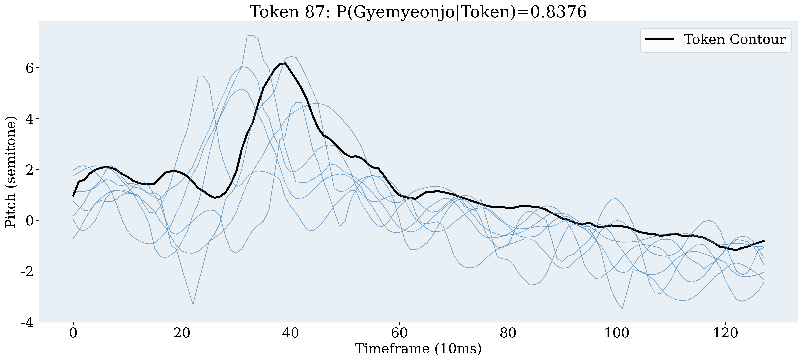
Token 87 · \(P(\text{Gyemyeonjo}\mid\text{token})=0.8376\) — upper-turn gesture
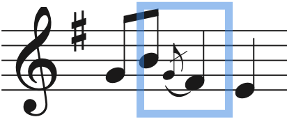
Staff-notation transcription
Real excerpt (separated vocals)
Pattern excerpt
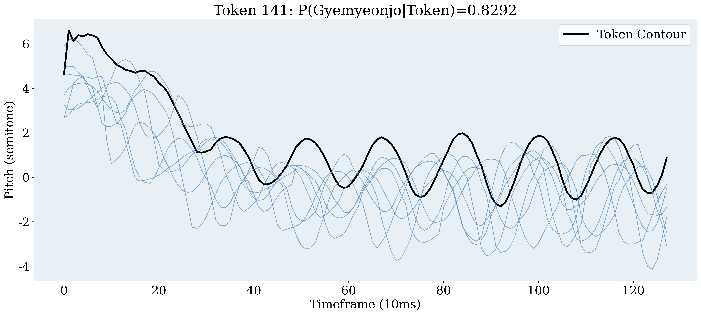
Token 141 · \(P(\text{Gyemyeonjo}\mid\text{token})=0.8292\) — downward gliding contour
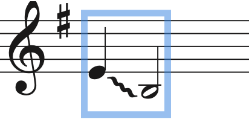
Staff-notation transcription
Real excerpt (separated vocals)
Pattern excerpt
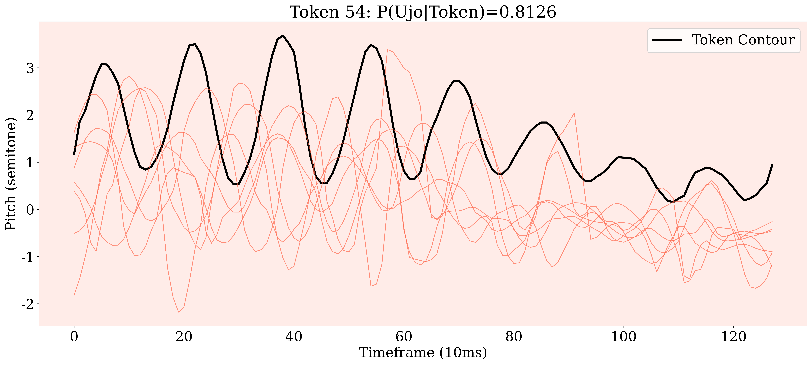
Token 54 · \(P(\text{Ujo}\mid\text{token})=0.8126\) — descending major second with wide vibrato
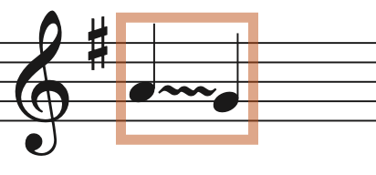
Staff-notation transcription
Real excerpt (separated vocals)
Pattern excerpt
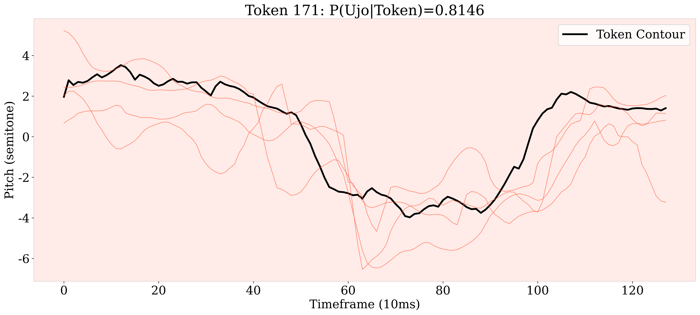
Token 171 · \(P(\text{Ujo}\mid\text{token})=0.8146\) — melodic phrase frequent in Ujo
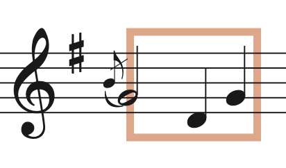
Staff-notation transcription
Real excerpt (separated vocals)
Pattern excerpt
More Mode-Characteristic Tokens
Additional tokens with high \(P(\text{mode}\mid\text{token})\), shown with the decoded token contour and real audio excerpts of assigned instances.
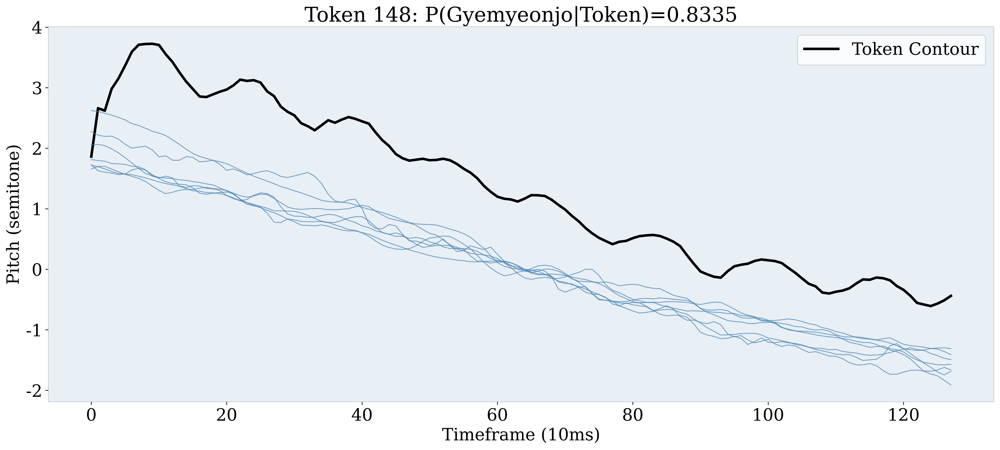
Token 148 · \(P(\text{Gyemyeonjo}\mid\text{token})=0.8335\)
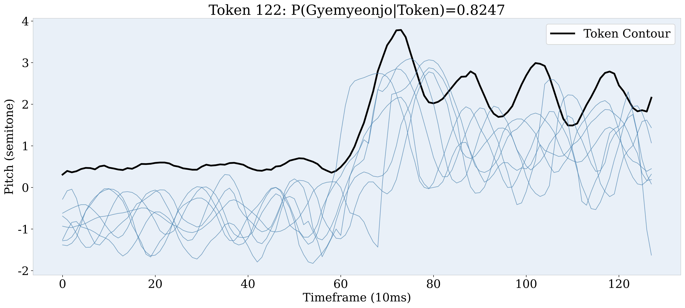
Token 122 · \(P(\text{Gyemyeonjo}\mid\text{token})=0.8247\)
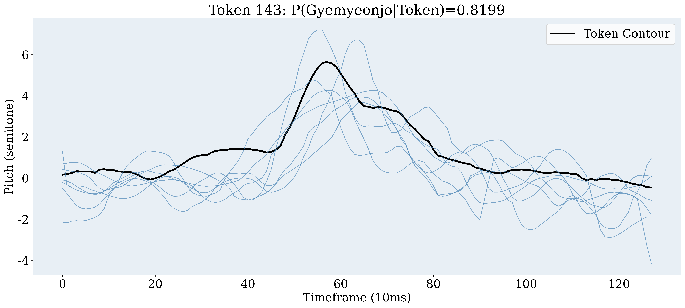
Token 143 · \(P(\text{Gyemyeonjo}\mid\text{token})=0.8199\)
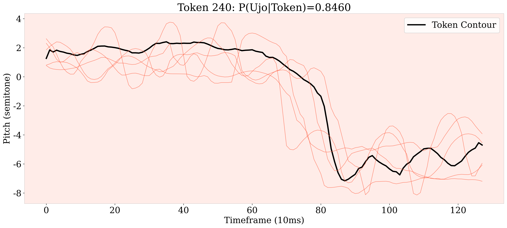
Token 240 · \(P(\text{Ujo}\mid\text{token})=0.8460\)
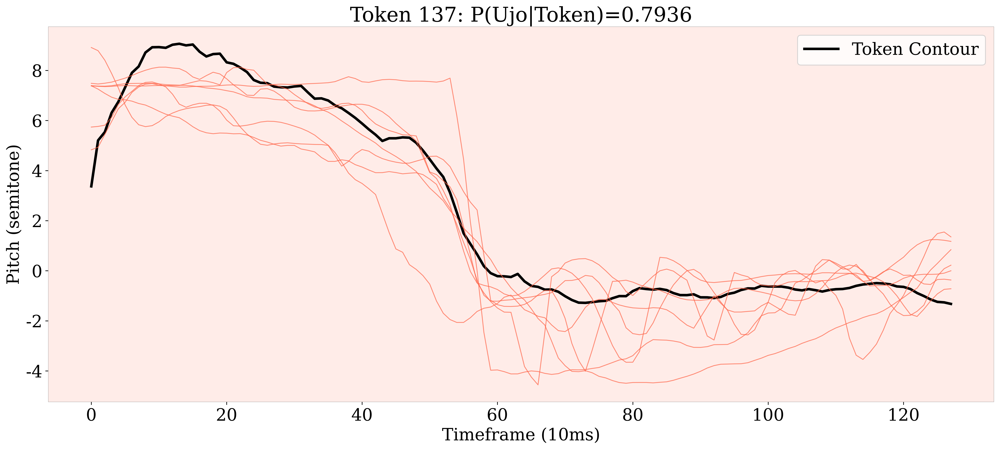
Token 137 · \(P(\text{Ujo}\mid\text{token})=0.7936\)
BibTeX
% TODO(camera-ready): replace with the final ISMIR 2026 BibTeX entry (page numbers, DOI)
@inproceedings{ju2026pitchcontour,
title = {Pitch Contour Tokenization using {VQ-VAE} and Its Application on Korean Traditional Music Analysis},
author = {Ju, Seonguk and Cho, Seola and Chung, Sooin and Han, Danbinaerin and Jeong, Dasaem},
booktitle = {Proceedings of the 27th International Society for Music Information Retrieval Conference (ISMIR)},
year = {2026}
}